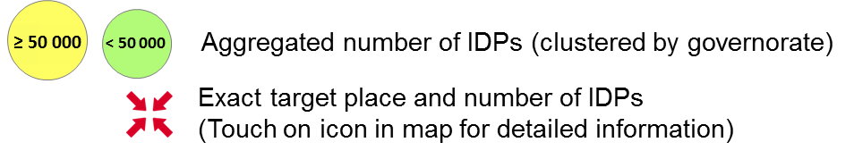

MIGRATION
"The movement of a person or a group of persons, either across an international border, or within a State. It is a population movement, encompassing any kind of movement of people, whatever its length, composition and causes; it includes migration of refugees, displaced persons, economic migrants, and persons moving for other purposes, including family reunification" (International Organization for Migration, June 18, 2016).
35.87 million (Worldbank)
Foto: Landscape of Iraq
FusionCharts will render here
FusionCharts will render here
FusionCharts will render here
MIGRATION OF IRAQ
1990 to 2015
Depending to the Institue for Economics & Peace, Iraq has the highest Global Terrorism Index in all previous studies
2003 to 2011: Iraq War
2007 to 2011: Withdrawal of US-troops
FusionCharts will render here
Data: Body Count Iraq
Total number of civilian deaths from 2003 to 2016: 177 366 fatalities
Destination of Internal Displacement
& Civilian Fatalities
by governorate and month

Origins of Displacement
by governorate and month

Global Refugeeflows
No relevant data outside border
1976:
500 000 persons moved from Guinea to Côte d´Ivoire
Reason: Unknown